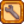
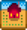
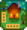
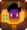
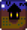
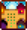
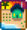
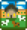

Getting Started
| Getting Started |
The Player |
Options | Controls | Mobile Controls |
Health | Energy | Skills | Day Cycle |
Stardew Valley is an open-ended game, allowing the player to achieve goals non-linearly.
There are various ways to earn income and many activities to choose from including farming, fishing, foraging, mining, combat (fighting enemies), crafting, cooking, gift giving, completing quests, donating to the Museum and restoring the Community Center.
Character Creation
- Main article: The Player
The character creation screen allows customization options, such as character Appearance, Gender, Name, Farm Name, Favorite Thing, and Animal Preference.
- There are 2 genders, 24 skin tones, 74 hairstyles, 112 shirts, 4 pants, 31 accessories, and 10 animals (5 cats and 5 dogs) to choose from.
- The villagers will refer to you matching the case you put your name in - for example, if you put all lowercase, the first letter will not be corrected to uppercase. {confirmed on mobile iOS and Nintendo Switch}
- The sliders next to eye color, hair color, and pants color represent hue, saturation, and value.
- Animal Preference determines which pet will be brought by Marnie.
- Gender does not affect in-game marriage.
- The "Favorite Thing" will be referenced in-game when the player eats a Stardrop. If the player chooses ConcernedApe (Capital C and A) as their favorite thing, the following message will appear when eaten.
If the player puts anything containing Stardew (capital S), then the following message will appear.
Players can later change their appearance for  500g, in the Wizard's Tower, after reaching 4 Hearts of friendship with him or gaining access to the Witch's Hut and using the portal within.
500g, in the Wizard's Tower, after reaching 4 Hearts of friendship with him or gaining access to the Witch's Hut and using the portal within.
At the character creation menu, there is a button with a wrench icon

that contains all of the Advanced Options, which are:- Changing the Community Center bundles between normal and remixed
- Making it so the Community Center is completable in year one by guaranteeing that the Traveling Cart will sell a Red Cabbage Seed sometime in the first year
- Changing the chest rewards in The Mines between normal and remixed
- Making it so monsters can spawn on the farm
- Changing the profit margin
- Choosing how many starter cabins there are and how far apart they are
- Setting the randomization in the game from the new randomization system to the old one
Farm map
- Main article: Farm Maps
Players can select from eight different farm maps. Each map offers unique benefits, and favors specific skills.
After selecting a map, it cannot be changed, characters are permanently tied to their map type once created. Space-wise each map takes up the same area, but there are different amounts of usable/farmable/buildable land on each.
| Name | Description | Favored Skill | |
|---|---|---|---|
 |
Standard Farm | The original farm map, designed to maximize open space for crops and animals. | |
 |
Forest Farm | The forest encroaches on the land, limiting farming space. However, there are renewable stumps on the west edge of the map, and seasonal forage items spawn there as well. There is a type of weed which spawns on this farm, which looks unique and will always drop mixed seeds when cut. | |
 |
Hill-top Farm | Lots of cliffs and there is a special mining area in the southwest where ore will spawn, as well as unique geode-bearing stones. | |
| Riverland Farm | Lots of water on this map... limiting space for crops and animals. Looks nice and fishing is actually viable on this farm... In fact, players can catch the same fish that are available in town. | ||
 |
Wilderness Farm | A large lake in the southwest corner, and a cliff along the east and south. Monsters will come out at night. Their stats scale with player combat level. Wilderness Golems are unique to this map. | |
 |
Four Corners Farm | The land is divided into four parcels, each with its own perk. Perfect for a group! | |
 |
Beach Farm | Good fishing and foraging, and tons of open space. Sometimes, supply crates wash up on shore. However, sprinklers don't work in the sandy soil. Seems more tailored to players who won't rely as much on crops. | |
 |
Meadowlands Farm | A varied map, containing a river and two small lakes. Starts with a Coop and two Chickens. Chewy blue grass grows on the map, providing an improved source of food for your animals. Encourages farming, specifically raising animals. | |
Controls
- Main article: Controls
All hotkeys can be reassigned by opening the menu and choosing the Options tab 
| Key | Description |
|---|---|
| W A S D |
W Move Up A Move Left S Move Down D Move Right |
| , C | Use tool or place item |
| , X | Check/Do Action |
| Escape, E | Open Menu |
| F | Open Journal |
| M | Open Map window |
| Y | Open Emote Menu |
| Switch Item | |
| Tab | Shift Toolbar |
| Left Shift | Run |
| ?, T | Open Chat Box |
| 1 - 0, - , = | Inventory hotkeys |
| F4 | Screenshot mode |
Preparing Your First Harvest
On all farm maps except for the Meadowlands farm, Mayor Lewis gives you 15 Parsnip Seeds to start with. On the Meadowlands farm, you start with a coop, 2 chickens, and Mayor Lewis gifts you 15 Hay.
- Use your axe, pickaxe, and scythe on the logs, stones, grass and bushes on your farm to clear about 15 tiles.
- Use your hoe to till the soil and plant the 15 Parsnip Seeds provided by Mayor Lewis. You obtain these on your first day on the floor inside your home.
- Use your watering can to water your seeds and soil.
- Continue watering your crops every day until they grow in to harvestable crops. Your parsnips will be ready to harvest in 4 days.
Watering Can
- Main article: Watering Cans
Crops needs to be watered daily in order to grow. The starting watering can only waters one tile at a time and can be refilled at any pond, river, or other body of water. This includes the kitchen sink, after getting your first house upgrade.
Crops need to be watered every day. Crops that are not watered will not die, but they will not grow either.
The best times to upgrade the watering can are the day before it is predicted to rain, as the rain will water the crops, or the 27th day of the season after watering any crops that are expected to ripen on the 28th. The Blacksmith will need 2 days to upgrade any tools, including the watering can.
Sprinklers, which must be crafted and placed, will automatically water surrounding tiles every morning. Throughout the gameplay, sprinklers become available in 3 tiers that can water an increasing number of surrounding tiles, starting with 4 tiles (immediately adjacent to the sprinkler), 8 tiles (in the surrounding 3x3 area), and up to 24 tiles (in the surrounding 5x5 area). The sprinkler range can be increased with Pressure Nozzles.
Energy
- Main article: Energy
Energy limits productivity. One of the main ways to overcome this is by eating food. Eating food is an action, for which default controls are Right Click or type X with the food highlighted in your inventory and then click Yes in the confirmation dialogue to eat the food. Most crops and many foraged items can be eaten in order to regain energy. Some foods can also subtract energy; hover the cursor over the food to see how much energy it gives/takes away.
Sleeping at the end of the day will restore the players' energy. After 12:00AM, the player won't restore 100% of the energy. If the player is exhausted when they go to bed or forced sleep at 2:00AM, they'll wake up in the morning with their energy level about half restored.
In Multiplayer, lying in bed will regain energy over time.
The Spa will fully restore energy over a short period of time.
Skills
- Main article: Skills
To level up skills, the player must complete certain actions related to that skill. Farming XP is earned by harvesting a fully grown crop and taking care of animals. Foraging XP is earned by foraging or chopping down trees. Mining XP is earned by breaking rocks and ore deposits. Fishing and using crab pots will increase fishing XP. Killing monsters will increase combat XP.
As the skill level increases, the player will earn crafting recipes (every level except level 5 and 10) or professions (on level 5 and 10).
Professions (level 5 and 10) can give the player a boost on yielding products, including more products gained, additional selling price, using less inventories and others. The player's choice of a level 5 profession will determine which profession choices are available at level 10.
Villagers and Friendship
- Main articles: Villagers, Friendship
- See also: Marriage, List of All Gifts
Talking and giving gifts to villagers will increase their friendship rating. You can talk to a villager by right-clicking on them. You can give a gift by highlighting it in your inventory or selecting it by typing its hotkey number and then left-clicking on the intended recipient.
As friendship is earned villagers will send cooking recipes or gifts through the mail, give you access to their bedrooms, and treat you differently in dialogue. Unique cutscenes and interactions can also occur as friendship is earned. The player must also earn a high level of friendship in order to date, and eventually marry, an eligible villager.
Whenever you talk or give a gift to a villager you get friendship points. You need 250 points to get 1 heart with them. Talking gives +20 points which can only be done once per day. Two gifts can be given per week, 1 gift per day.
Television
- Main article: Television
The television provides useful information, such as weather forecasts, daily luck, free cooking recipes, and other general tips. All players will have one inside their home when beginning a new game.